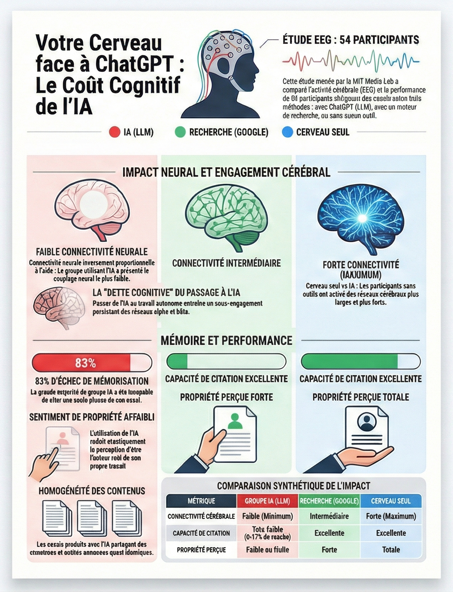

L'étude du MIT :
Une étude du MIT
de 2025 explore l'impact de l'utilisation des modèles de langage (LLM)
comme ChatGPT sur les processus cognitifs lors de la rédaction
d'essais. En comparant des participants (54 personnes) utilisant soit
une IA, soit un moteur de recherche, soit uniquement leur cerveau, les
chercheurs ont identifié un coût cognitif mesurable associé à
l'assistance technologique. L'analyse par électroencéphalographie
(EEG) démontre que la connectivité cérébrale diminue systématiquement
avec le niveau de soutien externe : le groupe "Cerveau seul" présente
les réseaux les plus étendus, tandis que l'usage de l'IA entraîne
l'engagement neural le plus faible.
Résumé des conclusions clés :
Atrophie de l'engagement neural
L'usage de l'IA réduit la charge mentale immédiate mais diminue l'engagement dans les processus de réflexion profonde et de raisonnement critique.
Affaiblissement de la mémoire
Les utilisateurs de l'IA sont largement incapables de citer leur propre travail (83,3 % d'échec), suggérant que le contenu n'est pas internalisé dans la mémoire épisodique.
Perte de propriété intellectuelle
Les participants utilisant l'IA rapportent un sentiment de propriété de leurs écrits bien plus faible, percevant souvent la production comme "robotique" ou "sans âme".
Dette cognitive
L'étude introduit le concept de "dette cognitive" : l'utilisation répétée de l'IA remplace l'effort mental nécessaire au développement des compétences, affaiblissant ainsi les capacités futures de l'individu s'il doit travailler sans aide.
Pour l'heure, l'article scientifique présentant les résultats de
cette expérience n'a pas encore été "revu par des pairs", une étape
essentielle dans la recherche visant à corroborer la bonne démarche
scientifique des chercheurs. L'expérience a par ailleurs été menée
sur un échantillon assez restreint de sujets. Mais la chercheuse
Nataliya Kosmyna souhaite alerter dès aujourd'hui sur la nécessité
d'une "éducation à l'utilisation de ces outils", notamment auprès
des enfants, et sur "le fait que le cerveau a besoin de se
développer de manière plus analogique".
Téléchargement de l'infographie récapitulative de l'étude
:

{kind=link}
L'étude de l'OCDE :
C'est précisément ce sujet qualifié de "paresse métacognitive" que l'OCDE tente de traiter dans son rapport Digital Education Outlook 2026. Le problème est l’illusion de progrès que l'IA peut créer lorsqu’elle est introduite sans cadre pédagogique solide.
Dans ces expériementations, des élèves utilisant l'IA conversationnelle (chatbot) pour résoudre des exercices de
mathématiques
réussissent 48 % de problèmes en plus à court terme. Mais lors d’un test ultérieur sans IA,
leurs résultats sont
17 % inférieurs à ceux d’élèves n’ayant jamais utilisé ces outils. La performance augmente.
L’apprentissage
réel, lui, recule.
Si l'IA est en capacité de fournir les bonnes réponses ainsi que parfois le raisonnement, l'élève qui reçoit
l'information n'est pas capable de s'approprier la méthode, les concepts. L'erreur n'est plus partie prenante
dans le processus d'apprentissage, il n'y a plus de reformulation, plus de modèle mental. la compétence est
substituée à l'utilisation de l'outil.
Au delà d'une paresse individuelle, le problème réside également dans la construction des chatbots. Ces grands modèles d'IA sont conçus pour satisfaire un utilisateur, pas pour former un esprit. Ils optimisent la rapidité, la clarté, le résultat final. Or l’apprentissage repose précisément sur l’inverse : le doute, la lenteur, l’effort cognitif intermédiaire.
Propositions : l’OCDE ne prône ni l’interdiction ni le laisser-faire mais à un changement de notre perception de l'IA. Passer d’une IA de réponse à une IA de guidage. Des systèmes conçus spécifiquement pour l’éducation, co-développés avec les enseignants, qui privilégient le questionnement, les indices progressifs et le feedback sur le raisonnement plutôt que la solution immédiate. Cette transformation implique aussi de revoir l’évaluation. Noter uniquement le rendu final devient de plus en plus inadéquat dans un contexte où la production peut être largement déléguée à une IA. L’OCDE plaide pour des évaluations orientées processus : observer comment l’élève raisonne, comment il utilise l’IA, à quel moment, et avec quelle distance critique.